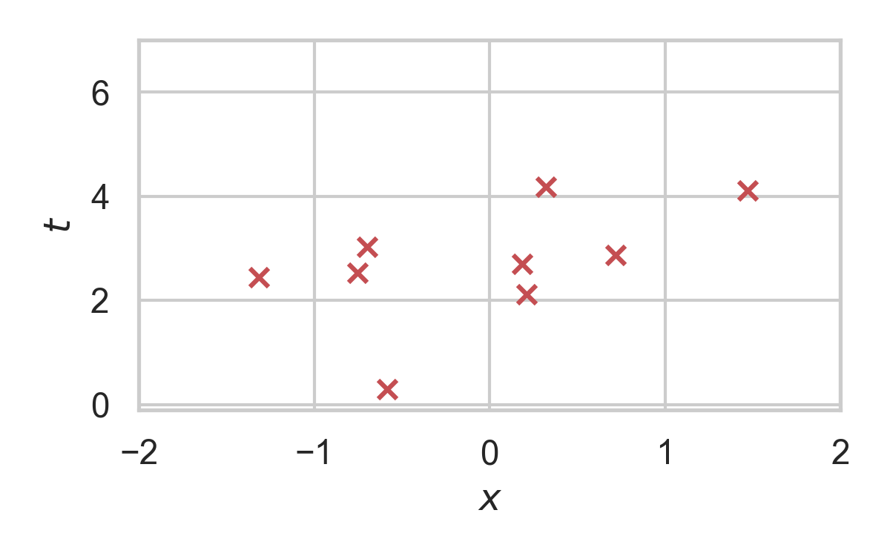
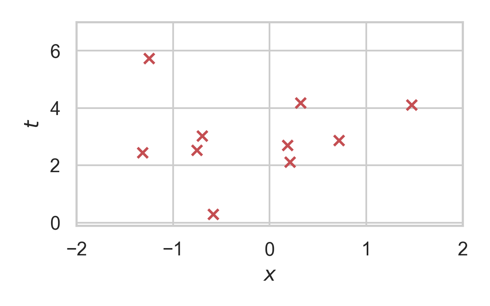

Relative Entropy Coding for Learned Data Compression
Gergely Flamich, CBL, Department of Engineering
25/04/2023
1. Data Compression Fundamentals
Lossless data compression with entropy coding:
- Assume statistical model over data: \(P_Z\)
- Common symbols have short codes, uncommon symbols have longer codes
- Can losslessly compress \(Z \sim P_Z\) using \(\mathbb{H}[Z] + \mathcal{O}(1)\) bits on average
- Huffman coding, arithmetic coding, ANS
2. Lossy Data Compression


3. Data Compression Fundamentals
- Assume statistical model over two variables \(P_{X, Z}\)
- Mutual information:
\[ I[X; Z] = \mathbb{H}[Z] - \mathbb{H}[Z \mid X] \]
Question: Does this have a compression interpretation?
4. Relative Entropy Coding / Channel Simulation
Source \(X\), latent \(Z\), model \(P_{X, Z}\)
Encoder:
- Receive \(X \sim P_X\) from source
- Encode \(Z \sim P_{Z \mid X}\) using \(P_Z\)
Decoder:
- Recover \(Z\) using \(P_Z\)
- Recover \(\hat{X} \sim P_{X \mid Z}\)
5. Relative Entropy Coding / Channel Simulation
Assumptions
- \(I[X; Z] < \infty\)
- Can simulate \(Z \sim P_Z\)
- Encoder and decoder share PRNG seed
Under these assumptions: We can encode \(Z \sim P_{Z \mid X}\) using \(I[Z; X]\) bits on average!
6. Applications of Relative Entropy Coding
6.1. Lossy Compression with Realism Constraints
Rate-Distortion trade-off

Rate-Distortion-Perception trade-off

6.2. Lossy Compression with Realism Constraints
- Theis & Agustsson (2021): toy example with REC provably better than quantization.
- Theis et al. (2022): compression with VDM.

6.3. Differential Privacy for federated learning
Client: have secret \(X\), \(\epsilon\) -LDP mechanism \(Z \sim P_{Z \mid X}\)
Image from Bhowmick et al. (2018)
Shah et al. (2021): Use REC to optimally encode \(Z\)
6.4. Model Compression

- Dataset \(\mathcal{D} \sim P_{\mathcal{D}}\)
- NN \(f(w, x)\) with weights \(w\) with prior \(P_w\)
- Train weight posterior \(P_{w \mid \mathcal{D}}\) using ELBO
- Encode \(w \sim P_{w \mid \mathcal{D}}\) in \(I[w; \mathcal{D}]\) bits
Image from Blundell et al. (2015)
6.5. Model Compression
Havasi et al. (2018): MIRACLE

6.6. Data Compression with INRs

Image from Dupont et al. (2021)
Problem: Post-training quantization severely impacts performance!
6.7. Compress variational INRs!
COMBINER: COMpression with Bayesian Implicit Neural Representations
Variational INRs, train negative \(\beta\) -ELBO: \[ \mathbb{E}_{w, \mathcal{D}}[-\log p(\mathcal{D} \mid w)] + \beta \cdot I[w; \mathcal{D}] \]

7. Current limitations of REC
Current REC algorithms are:
- Too slow (Agustsson & Theis, 2020):
- Average runtime of any general REC algorithm must scale at least \(2^{I[X; Z]}\)
- Too limited:
- Uniforms only (Agustsson & Theis, 2020)
- 1D unimodal distributions only (F et al., 2022)
- Too much codelength overhead
Open problem: \(\mathcal{O}(I[X; Z])\) runtime when both \(P_{Z \mid X}\) and \(P_Z\) are multivariate Gaussian?
8. Take home message: Overview and Applications
- REC is a stochastic compression framework
- Alternative to quantization and entropy coding
- It finds applications in:
- Lossy compression with realism constraints
- Differentially private federated learning
- Model compression
- Compressing Bayesian INRs
- Currently still too slow or limited
9. Poisson Processes
- Collection of random points in space
- Focus on spatio-temporal processes on \(\mathbb{R}^D \times \mathbb{R}^+\)
- Exponential inter-arrival times
- Spatial distribution \(P_{X \mid T}\)
9.1. Poisson Processes

9.2. Example with \(P_{X \mid T} = \mathcal{N}(0, 1)\)

9.3. Example with \(P_{X \mid T} = \mathcal{N}(0, 1)\)

9.4. Example with \(P_{X \mid T} = \mathcal{N}(0, 1)\)

9.5. Example with \(P_{X \mid T} = \mathcal{N}(0, 1)\)

9.6. Example with \(P_{X \mid T} = \mathcal{N}(0, 1)\)

9.7. Example with \(P_{X \mid T} = \mathcal{N}(0, 1)\)

9.8. Example with \(P_{X \mid T} = \mathcal{N}(0, 1)\)

9.9. Example with \(P_{X \mid T} = \mathcal{N}(0, 1)\)

10. Rejection Sampling
- Sampling algorithm for target distribution \(Q\).
- Using proposal \(P\)
- Bound on their density ratio \(q/p\): \(M\)
10.1. Rejection Sampling

10.2. RS with \(P = \mathcal{N}(0, 1), Q = \mathcal{N}(1, 1/16)\)

10.3. RS with \(P = \mathcal{N}(0, 1), Q = \mathcal{N}(1, 1/16)\)

10.4. RS with \(P = \mathcal{N}(0, 1), Q = \mathcal{N}(1, 1/16)\)

10.5. RS with \(P = \mathcal{N}(0, 1), Q = \mathcal{N}(1, 1/16)\)

10.6. RS with \(P = \mathcal{N}(0, 1), Q = \mathcal{N}(1, 1/16)\)

10.7. RS with \(P = \mathcal{N}(0, 1), Q = \mathcal{N}(1, 1/16)\)

10.8. RS with \(P = \mathcal{N}(0, 1), Q = \mathcal{N}(1, 1/16)\)

10.9. RS with \(P = \mathcal{N}(0, 1), Q = \mathcal{N}(1, 1/16)\)

10.10. RS with \(P = \mathcal{N}(0, 1), Q = \mathcal{N}(1, 1/16)\)

10.11. RS with \(P = \mathcal{N}(0, 1), Q = \mathcal{N}(1, 1/16)\)

10.12. RS with \(P = \mathcal{N}(0, 1), Q = \mathcal{N}(1, 1/16)\)

10.13. RS with \(P = \mathcal{N}(0, 1), Q = \mathcal{N}(1, 1/16)\)

11. Channel Simulation with Rejection Sampling
Encoder:
- Receive \(X \sim P_X\)
- Rejection sample from \(P_{Z \mid X}\) using \(P_Z\).
- Send index \(K\) of the accepted sample.
Decoder:
- Simulate the same \(K\) samples from \(P_Z\)
12. Efficiency of RS
Best possible bound is \(M^* = \sup_{z} \frac{p(z \mid X)}{p(z)}\).
Define \(D_{\inf}[P_{Z \mid X} \Vert P_Z] = \log M^*\).
\(K\) is geometric.
\(H[K \mid X] \geq D_{\inf}[P_{Z \mid X} \Vert P_Z]\).
\(\mathbb{E}[K \mid X] = \exp(D_{\inf}[P_{Z \mid X} \Vert P_Z])\).
13. Greedy Poisson Rejection Sampling

13.1. GPRS with \(P = \mathcal{N}(0, 1), Q = \mathcal{N}(1, 1/16)\)

13.2. GPRS with \(P = \mathcal{N}(0, 1), Q = \mathcal{N}(1, 1/16)\)

13.3. GPRS with \(P = \mathcal{N}(0, 1), Q = \mathcal{N}(1, 1/16)\)

13.4. GPRS with \(P = \mathcal{N}(0, 1), Q = \mathcal{N}(1, 1/16)\)

13.5. GPRS with \(P = \mathcal{N}(0, 1), Q = \mathcal{N}(1, 1/16)\)

13.6. GPRS with \(P = \mathcal{N}(0, 1), Q = \mathcal{N}(1, 1/16)\)

13.7. GPRS with \(P = \mathcal{N}(0, 1), Q = \mathcal{N}(1, 1/16)\)

14. How to find \(\sigma\)?
15. Analysis of GPRS
Codelength
\[ H[K \mid X] \leq D_{KL}[P_{Z \mid X} \Vert P_Z] + \log(D_{KL}[P_{Z \mid X} \Vert P_Z] + 1) + \mathcal{O}(1) \]
\[ H[K] \leq I[X; Z] + \log(I[X; Z] + 1) + \mathcal{O}(1) \]
Runtime
\[ \mathbb{E}[K \mid X] = \exp(D_{\inf}[P_{Z \mid X} \Vert P_Z]) \]
16. Speeding up GPRS
16.1. Fast GPRS with \(P = \mathcal{N}(0, 1), Q = \mathcal{N}(1, 1/16)\)

16.2. Fast GPRS with \(P = \mathcal{N}(0, 1), Q = \mathcal{N}(1, 1/16)\)

16.3. Fast GPRS with \(P = \mathcal{N}(0, 1), Q = \mathcal{N}(1, 1/16)\)

16.4. Fast GPRS with \(P = \mathcal{N}(0, 1), Q = \mathcal{N}(1, 1/16)\)

16.5. Fast GPRS with \(P = \mathcal{N}(0, 1), Q = \mathcal{N}(1, 1/16)\)

16.6. Fast GPRS with \(P = \mathcal{N}(0, 1), Q = \mathcal{N}(1, 1/16)\)

17. Analysis of faster GPRS
Now, encode search path \(\pi\).
\(H[\pi] \leq I[X; Z] + \log(I[X; Z] + 1) + \mathcal{O}(1)\)
\(\mathbb{E}[\lvert\pi\rvert] = \mathcal{O}(I[X; Z])\)
18. References
- Agustsson, E., & Theis, L. (2020). Universally quantized neural compression. Advances in neural information processing systems, 33, 12367-12376.
- A. Bhowmick, J. Duchi, J. Freudiger, G. Kapoor, and R. Rogers. Protection against reconstruction and its applications in private federated learning. arXiv preprint arXiv:1812.00984, 2018.
- Blundell, C., Cornebise, J., Kavukcuoglu, K., & Wierstra, D. (2015, June). Weight uncertainty in neural network. In International conference on machine learning.
19. References
- G F, Stratis Markou, and Jose Miguel Hernandez-Lobato. Fast relative entropy coding
with A* coding. In Proceedings of the 39th International Conference on Machine Learning
- M. Havasi, R. Peharz, and J. M. Hern ́andez-Lobato. Minimal Random Code Learning: Getting Bits Back from Compressed Model Parameters. In International Conference on Learning Representations, 2019.
20. References
- A. Shah, W.-N. Chen, J. Balle, P. Kairouz, and L. Theis. Optimal compression of locally differentially private mechanisms. In Artificial Intelligence and Statistics, 2022. URL https://arxiv.org/abs/2111.00092.
- Theis, L., & Agustsson, E. (2021). On the advantages of stochastic encoders. arXiv preprint arXiv:2102.09270.
- Theis, L., Salimans, T., Hoffman, M. D., & Mentzer, F. (2022). Lossy compression with gaussian diffusion. arXiv preprint arXiv:2206.08889.